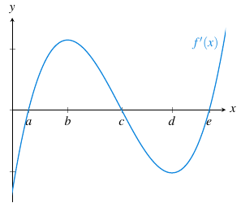

6 Derivadas de funciones
Ejercicio 6.1 Usando la definición de derivada, demostrar que la derivada de la función \(f(x)=x^n\) es \(f'(x)=nx^{n-1}\) donde \(n\in\mathbb{N}\).
Ver Ejercicio 5.9 apartado (g).
Ejercicio 6.2 Demostrar que la función \(f(x)=|x-1|\) es continua en \(x=1\) pero no es derivable en dicho punto.
Si calculamos los límites laterales tenemos
\[\begin{align*} \lim_{x\to 1^-}\frac{f(x)-f(a)}{x-1} &= \lim_{x\to 1^-}\frac{|x-1|-|1-1|}{x-1} = \lim_{x\to 1^-} \frac{-(x-1)}{x-1} = \lim_{x\to 1^-} -1 = -1.\\ \lim_{x\to 1^+}\frac{f(x)-f(a)}{x-1} &= \lim_{x\to 1^+}\frac{|x-1|-|1-1|}{x-1} = \lim_{x\to 1^+} \frac{x-1}{x-1} = \lim_{x\to 1^+} 1 = 1. \end{align*}\] Como el límite por la izquierda y por la derecha son distintos, no existe la derivada de \(f\) en \(1\).
Ejercicio 6.3 Estudiar si es derivable la función \(f(x)=\sqrt[3]{x-1}\) en el punto \(x=1\).
Si calculamos los límites laterales tenemos
\[\begin{align*} \lim_{x\to 1}\frac{f(x)-f(a)}{x-1} &= \lim_{x\to 1}\frac{\sqrt[3]{x-1}-\sqrt[3]{1-1}}{x-1} = \lim_{x\to 1} \frac{\sqrt[3]{x-1}}{x-1} \\ &= \lim_{x\to 1} \frac{\sqrt[3]{x-1}\sqrt[3]{(x-1)^2}}{(x-1)\sqrt[3]{(x-1)^2}} = \lim_{x\to 1} \frac{x-1}{(x-1)\sqrt[3]{(x-1)^2}} \\ &= \lim_{x\to 1} \frac{1}{\sqrt[3]{(x-1)^2}} = \infty. \end{align*}\]
Como el límite no existe, no existe la derivada de \(f\) en \(1\).
Ejercicio 6.4 Estudiar la derivabilidad de \(f\) en los puntos \(x=-1\), \(x=2\) y \(x=3\) siendo
\[ f(x)= \begin{cases} \log(-x) & \mbox{si $x<-1$,} \\ \operatorname{sen}(\pi x) & \mbox{si $x\in [-1,2]$,} \\ x/2 & \mbox{si $x\in (2,3)$,} \\ 3/2 & \mbox{si $x\geq 3$.} \end{cases} \]
Las funciones de todos los trozos son derivables en todo su dominio, por lo que estudiaremos la derivada por la izquierda y por la derecha en cada uno de los puntos.
Derivabilidad en en \(x=-1\):
\[\begin{align*} f'^-(-1) &= \frac{-1}{-1} = 1\\ f'^+(-1) &= \pi \cos(-\pi) = -\pi \end{align*}\]
Como \(f'^-(-1)\neq f'^+(-1)\) la función no es derivable en \(x=-1\).
Derivabilidad en en \(x=2\):
\[\begin{align*} f'^-(2) &= \pi \cos(2\pi) = \pi\\ f'^+(2) &= 1/2 \end{align*}\]
Como \(f'^-(2)\neq f'^+(2)\) la función no es derivable en \(x=2\).
Derivabilidad en en \(x=2\):
\[\begin{align*} f'^-(3) &= 1/2\\ f'^+(3) &= 0 \end{align*}\]
Como \(f'^-(3)\neq f'^+(3)\) la función no es derivable en \(x=3\).
Ejercicio 6.5 Estudiar la derivabilidad de las siguientes funciones y hallar la función derivada correspondiente en los puntos donde exista.
\[f(x)= \begin{cases} 1-x & \mbox{si $x\leq 0$,} \\ e^{-x} & \mbox{si $x>0$.} \end{cases} \]
\(g(x)=2x+|x^2-2|\).
La función \(1-x\) es un polinomio y por tanto es derivable en todo \(\mathbb{R}\). Del mismo modo, la función \(e^{-x}\) es una función exponencial que también es derivable en todo \(\mathbb{R}\). Por tanto, faltaría estudiar si existe la derivada en el punto donde cambia la definición de la función, es decir, en \(x=0\). Estudiaremos la derivada por la izquierda y por la derecha en ese punto.
\[\begin{align*} f'^-(0) &= -1\\ f'^+(0) &= -e^0 = -1 \end{align*}\]
Como \(f'^-(0)= f'^+(0)\) la función es derivable en \(x=0\) y \(f'(0)=-1\).
Así pues, la función derivada de \(f\) es
\[ f'(x)= \begin{cases} -1 & \mbox{si $x\leq 0$,} \\ -e^{-x} & \mbox{si $x>0$.} \end{cases} \]
Para estudiar la derivabilidad de \(g\) primero vamos a expresar la función \(|x^2-2|\) como una función a trozos. Para ello necesitamos saber en qué puntos la función \(x^2-2\) es positiva, y en qué puntos es negativa. Si calculamos las raíces de esta función tenemos:
\[ |x^2-2| = 0 \Leftrightarrow x^2 = 2 \Leftrightarrow x = \pm \sqrt 2. \]
Si estudiamos el signo en los intervalos definidos por las raíces, podemos comprobar fácilmente sin más que calcular la función en cualquier punto de los intervalos que \(x^2-2\) es negativa en el intervalo \((-\sqrt 2, \sqrt 2)\) y positiva en el resto de su dominio. Por tanto, podemos expresar el valor absoluto de la siguiente manera:
\[ |x^2-2| = \begin{cases} x^2-2 & \mbox{si } x<-\sqrt{2}, \\ -x^2+2 & \mbox{si } -\sqrt{2} \leq x \leq \sqrt{2},\\ x^2-2 & \mbox{si } x > \sqrt{2}. \end{cases} \]
y entonces, la función original puede expresarse como:
\[ g(x) = \begin{cases} 2x+x^2-2 & \mbox{si } x< -\sqrt{2}, \\ 2x-x^2+2 & \mbox{si } -\sqrt{2} \leq x \leq \sqrt{2},\\ 2x+x^2-2 & \mbox{si } x > \sqrt{2}. \end{cases} \]
Ahora, si estudiamos la derivabilidad de cada una de estas funciones en los trozos correspondientes, vemos que ambas son polinomios y por tanto son derivables en sus dominios. Faltaría por estudiar la derivabilidad en los puntos donde cambia la definición de la función. Para ello estudiamos la derivada por la izquierda y por la derecha en esos puntos. En el punto \(x=-\sqrt 2\) tenemos:
\[\begin{align*} g'^-(-\sqrt{2}) &= 2-2\sqrt 2\\ g'^+(-\sqrt{2}) &= 2+2\sqrt 2 \end{align*}\]
Y como ambas derivadas no coinciden la función no es derivable en \(x=-\sqrt 2\). En \(x=\sqrt{2}\) tenemos:
\[\begin{align*} g'^-(\sqrt{2}) &= 2-2\sqrt 2\\ g'^+(\sqrt{2}) &= 2+2\sqrt 2 \end{align*}\]
Ambas derivadas no coinciden y tampoco es derivable en \(x=\sqrt 2\).
Así pues, la derivada de \(g\) vale: \[ g'(x)= \begin{cases} 2+2x & \mbox{si } x< -\sqrt{2}, \\ 2-2x & \mbox{si } -\sqrt{2} < x < \sqrt{2},\\ 2+2x & \mbox{si } x > \sqrt{2}. \end{cases} \]
Ejercicio 6.6 Dada la función
\[ f(x)= \begin{cases} \operatorname{sen}(x)^2 & \mbox{si $x\leq 0$}, \\ ax^2+b & \mbox{si $0<x\leq c$}, \\ \ln(x) & \mbox{si $c<x$}, \end{cases} \]
con \(a,b,c\in\mathbb{R}\), ¿existe algún valor de las constantes de manera que la función sea continua y derivable en todo su dominio?
Estudiaremos primero la continuidad y luego la derivabilidad.
Las funciones \(\operatorname{sen}(x)^2\), \(ax^2+b\) y \(\ln(x)\) son todas continuas en sus dominios, por tanto, basta con estudiar los puntos donde cambia la definición de la función.
En el punto \(x=0\) tenemos: \[\begin{align*} \lim_{x\rightarrow 0^{-}}f(x) &= \lim_{x\rightarrow 0^{-}}\operatorname{sen}(x)^2=\operatorname{sen}(0)^2=0, \\ \lim_{x\rightarrow 0^{+}}f(x) &= \lim_{x\rightarrow 0^{+}}ax^2+b=a0^2+b=b, \\ f(0) &= \operatorname{sen}(0)^2=0. \end{align*}\]
Por tanto, la función será continua en \(x=0\) si y sólo si \(b=0\).
En el punto \(x=c\) tenemos: \[\begin{align*} \lim_{x\rightarrow c^{-}}f(x) &= \lim_{x\rightarrow c^{-}}ax^2+b=ac^2+b, \\ \lim_{x\rightarrow c^{+}}f(x) &= \lim_{x\rightarrow c^{+}}\ln(x)=\ln(c), \\ f(c) &= ac^2+b. \end{align*}\]
Luego la función será continua en \(x=c\) si y sólo si \(ac^2+b=\ln(c)\).
Por consiguiente, para que la función sea continua en todo su dominio deben cumplirse las dos ecuaciones siguientes: \[ \begin{cases} b=0 \\ ac^2+b = \ln(c) \end{cases} \]
Con la derivabilidad ocurre lo mismo pues las funciones \(\operatorname{sen}(x)^2\) , \(ax^2+b\) y \(\ln(x)\) son derivables en su dominio y basta con estudiar la derivada por la izquierda y por la derecha en los puntos donde cambia la definición de la función.
En el punto \(x=0\) (imponemos \(b=0\) pues de lo contrario la función no sería continua en este punto y tampoco derivable) tenemos:
\[\begin{align*} f'^-(0) &= 2\operatorname{sen}(0)\cos(0) = 0\\ f'^+(0) &= 2a\cdot 0 = 0 \end{align*}\]
Luego la función es derivable en \(x=0\) si y sólo si \(b=0\).
En el punto \(x=c\) tenemos:
\[\begin{align*} f'^-(c) &= 2ac \\ f'^+(c) &= 1/c \end{align*}\]
Luego, para que la función sea derivable en \(x=c\), además de la condición de continuidad, se debe cumplir \(2ac = \frac{1}{c}\).
Así pues, para que la función sea continua y derivable en todo su dominio deben cumplirse las tres ecuaciones siguientes:
\[ \begin{cases} b=0 \\ ac^2+b = \ln(c)\\ 2ac = \frac 1c \end{cases} \]
Resolviendo el sistema llegamos a:
\[ a = \frac{1}{2c^2} \Rightarrow \ln(c) = ac^2+b = \frac{1}{2c^2}c^2 = \frac{1}{2} \Rightarrow c = e^{1/2}, \] y, por tanto,
\[ a = \frac{1}{2(e^{1/2})^2} = \frac{1}{2e}. \]
Los valores de las constantes que hacen que la función sea continua y derivable en todo su dominio son:
\[\begin{align*} a &= \frac{1}{2e},\\ b &= 0, \\ c &= e^{1/2}. \end{align*}\]
Ejercicio 6.7 Para cada una de las siguientes curvas, hallar las ecuaciones de las rectas tangente y normal en el punto \(a\) indicado.
- \(y=x^{\operatorname{sen}(x)},\quad a=\pi/2\).
- \(y=\ln\sqrt{\frac{1+x}{1-x}}, \quad a=0\).
La ecuación de la recta tangente a la función \(f\) en el punto \(x=a\) es \(y=f(a)+f'(a)(x-a)\) y la ecuación de la recta normal en ese mismo punto es \(y=f(a)-\frac{1}{f'(a)}(x-a)\), de modo que necesitamos calcular la derivada de la función en el punto dado.
\(y'= x^{\operatorname{sen(x)}}\left(\cos(x)\ln(x)+\frac{\operatorname{sen}(x)}{x}\right)\), y en \(x=\pi/2\) se tiene \(y'(\pi/2)= (\pi/2)^{\operatorname{sen(\pi/2)}}\left(\cos(\pi/2)\ln(\pi/2)+\frac{\operatorname{sen}(\pi/2)}{\pi/2}\right) = 1\).
Por tanto, como \(\left(\frac{\pi}{2}\right)^{\operatorname{sen}(\pi/2)}=\frac{\pi}{2}\), la ecuación de la recta tangente en \(x=\pi/2\) es \(y=\frac{\pi}{2} + x-\frac{\pi}{2} = x\), y la ecuación de la recta normal es \(y=\frac{\pi}{2}-x+\frac{\pi}{2} = -x+\pi\).
Es este caso, antes de derivar conviene simplificar la función.
\[\begin{align*} y'&=\left(\ln\sqrt{\frac{1+x}{1-x}}\right)' = \left(\frac{1}{2}(\ln(1+x)-\ln(1-x))\right)' \\ &= \frac{1}{2}\left(\frac{1}{1+x}+\frac{1}{1-x}\right) = \frac{1}{1-x^2} \end{align*}\]
, y en \(x=0\) se tiene \(y'(0)=1\).
Por tanto, como \(\ln\sqrt{\frac{1+0}{1-0}}=0\), la ecuación de la recta tangente en \(x=0\) es \(y=x\), y la ecuación de la recta normal es \(y=-x\).
Ejercicio 6.8 Dadas las funciones \(f(x)=\ln\left(\frac{x^2}{2}\right)\) y \(g(x)=x^3+2\), ¿existe algún valor de \(x\) en el que la recta normal a \(f\) y la recta tangente a \(g\) en dicho punto sean paralelas?
Para ver si dos rectas son paralelas, basta con ver si tienen la misma pendiente.
\[\begin{align*} f'(x) &= \left(\ln\left(\frac{x^2}{2}\right)\right)' = (2\ln(x) - \ln(2))' = \frac{2}{x}\\ g'(x) &= 3x^2 \end{align*}\]
Así pues, la pendiente de la recta normal a \(f\) en \(x\) es \(\frac{-1}{f'(x)} = \frac{-x}{2}\) y la pendiente de la recta tangente a \(g\) en \(x\) es \(3x^2\). Igualando las dos pendientes y resolviendo la ecuación resultante, se tiene
\[ \frac{-x}{2} = 3x^2 \Leftrightarrow 6x^2 + x =0 \Leftrightarrow x(6x+1) = 0 \Leftrightarrow x=0 \mbox{ o } x=\frac{-1}{6}. \]
Ahora bien, como \(f\) no está definida en \(x=0\), el único valor de \(x\) para el que la recta normal a \(f\) es paralela a la recta tangente a \(g\) es \(x=-1/6\).
Ejercicio 6.9 Demostrar que cualquier función polinómica \(f(x)=c_0+c_1x+c_2x^2+\cdots+c_nx^n\) con \(n\in\mathbb{N}\) es derivable en todo \(\mathbb{R}\).
Sea el polinomio \(f(x)=c_0+c_1x+c_2x^2+\cdots+c_nx^n\) con \(n\in\mathbb{N}\). Aplicando el álgebra de derivadas, se tiene
\[\begin{align*} f'(x) &= (c_0+c_1x+c_2x^2+\cdots+c_nx^n)' \\ &= c_0'+(c_1x)'+(c_2x^2)'+\cdots+(c_nx^n)' \\ &= c_1+c_2x+\cdots+c_nx^{n-1}, \end{align*}\]
que existe para todo \(\mathbb{R}\).
Ejercicio 6.10 Demostrar que cualquier función racional \(h(x)=\dfrac{f(x)}{g(x)}\), con \(f(x)\) y \(g(x)\) funciones polinómicas, es derivable en todo \(x\in\mathbb{R}\) tal que \(g(x)\neq 0\).
Como \(f(x)\) y \(g(x)\) son dos polinomios, por el ejercicio anterior se tiene que son derivables en todo \(\mathbb{R}\), y aplicando el álgebra de derivadas se tiene \(h(x)\) es derivable en todo \(x\in\mathbb{R}\) tal que \(g(x)\neq 0\), y
\[ h'(x) = \left(\frac{f(x)}{g(x)}\right)' = \frac{f'(x)g(x)-f(x)g'(x)}{g(x)^2}. \]
Ejercicio 6.11 Hallar la expresión de la derivada \(n\)-ésima de las siguientes funciones:
- \(f(x)=a^x\ln(a)\).
- \(g(x)=\dfrac{\operatorname{sen}(x)+\cos(x)}{2}\).
- \(h(x)=\dfrac{9x^2-2x-25}{x^3-2x^2-5x+6}\).
- \(j(x)=\dfrac{1}{\sqrt{1+x}}\).
\[\begin{align*} f'(x) &= a^x\ln(a)^2,\\ f''(x) &= a^x\ln(a)^3,\\ f'''(x) &= a^x\ln(a)^4,\\ \vdots \\ f^{(n}(x) &= a^x\ln(a)^{n+1} \end{align*}\]
\[\begin{align*} g'(x) &= \frac{\cos(x)-\operatorname{sen}(x)}{2},\\ g''(x) &= \frac{-\operatorname{sen}(x)-\cos(x)}{2},\\ g'''(x) &= \frac{-\cos(x)+\operatorname{sen}(x)}{2},\\ g''''(x) &= \frac{\operatorname{sen}(x)+\cos(x)}{2} \end{align*}\]
Como \(g'''' = g\), las derivadas se van a repetir cíclicamente cada múltiplo de cuatro. Podemos expresar la derivada de orden \(n\) de la siguiente forma
\[ g^{(n}(x)= \begin{cases} \frac{\operatorname{sen}(x) + \cos(x)}{2} & \mbox{si $n=4k$,}\\ \frac{\cos(x)-\operatorname{sen}(x)}{2} & \mbox{si $n=4k+1$,}\\ \frac{-\operatorname{sen}(x)-\cos(x)}{2} & \mbox{si $n=4k+2$,}\\ \frac{\operatorname{sen}(x)+\cos(x)}{2} & \mbox{si $n=4k+3$.}\\ \end{cases} \quad k\in\mathbb{N}. \]
Descomponiendo primero en fracciones simples, se tiene que
\[\begin{align*} h(x) &= \frac{9x^2-2x-25}{x^3-2x^2-5x+6} = \frac{9x^2-2x-25}{(x-3)(x-1)(x+2)} \\ &= \frac{5}{x-3}+\frac{3}{x-1}+\frac{1}{x+2} \\ &= 5(x-3)^{-1}+3(x-1)^{-1}+(x+2)^{-1} \end{align*}\]
Calculamos ahora las sucesivas derivadas.
\[\begin{align*} h'(x) & = 5(-1)(x-3)^{-2}+3(-1)(x-1)^{-2}+(-1)(x+2)^{-2}\\ h''(x) &= 5(-1)(-2)(x-3)^{-3}+3(-1)(-2)(x-1)^{-3}+(-1)(-2)(x+2)^{-3}\\ h'''(x) &= 5(-1)(-2)(-3)(x-3)^{-4}+3(-1)(-2)(-3)(x-1)^{-4}+(-1)(-2)(-3)(x+2)^{-4}\\ \vdots \\ h^{(n}(x) &= 5(-1)^n n!(x-3)^{-(n+1)}+ 3(-1)^n n!(x-1)^{-(n+1)} + (-1)^n n!(x+2)^{-(n+1)} \end{align*}\]
\(j(x)=\dfrac{1}{\sqrt{1+x}}=(1+x)^{-1/2}\).
\[\begin{align*} j'(x) &= \frac{-1}{2}(1+x)^{-3/2}\\ j''(x) &= \frac{-1}{2}\frac{-3}{2}(1+x)^{-5/2}\\ j'''(x) &= \frac{-1}{2}\frac{-3}{2}\frac{-5}{2}(1+x)^{-7/2}\\ \vdots \\ j^{(n}(x) &= \frac{(-1)^n \prod_{i=1}^{n}2i-1}{2^n}(1+x)^{-\frac{2n+1}{2}} \end{align*}\]
Ejercicio 6.12 Se sabe que la demanda de un producto, en decenas de miles de unidades, depende de su precio según la función \(D(x)=\ln(10/x)\). Si el precio mensual evoluciona según la función \(x(t)=2+\frac{t}{10}\), ¿cuál será la tasa de variación de la demanda en el instante \(t=5\)? Según esta tasa de variación de la demanda, ¿qué demanda aproximada se espera tener un mes después?
La función que expresa la demanda en función del tiempo es la composición de \(x\) con \(D\). Aplicando la regla de la cadena se tiene
\[ D'(t) = \frac{dD}{dt} = \frac{dD}{dx}\frac{dx}{dt} = \frac{-1}{x}\frac{1}{10} =\frac{-1}{(2+\frac{t}{10})10} = \frac{-1}{20+t}. \]
En el instante \(t=5\) la tasa de variación instantánea de la demanda es
\[ D'(5) = \frac{-1}{20+5} = \frac{-1}{25}, \]
es decir, la demanda decrecerá \(10000/25=400\) unidades al mes, a partir de ese instante.
Para predecir la demanda aproximada un més después se puede utilizar la recta tangente a \(D\) en el instante \(t=5\), que tiene ecuación,
\[ y = D(5)+D'(5)(t-5) = \ln\left(\frac{10}{2+\frac{5}{10}}\right) -\frac{1}{25}(t-5) = \ln(4)+\frac{1}{5}-\frac{t}{25}. \]
La predicción de la recta tangente un mes después, es decir para \(t=6\) es \(\ln(4)+\frac{1}{5}-\frac{6}{25}=1.35\) decenas de miles de unidades.
Ejercicio 6.13 Un balón relleno de aire tiene radio 10 cm cuando se empieza a introducir más aire, de manera que el radio se incrementa con una velocidad de 2 cm/s. ¿Con qué velocidad varía el volumen en ese instante?
Suponiendo que el balón tiene forma esférica, el volumen de aire depende del radio del balón según la función \(V(r)=\frac{4}{3}\pi r^3\). Ahora bien, como empezamos a introducir aire en el balón, el radio dependerá del tiempo, según la función \(r(t)\), y por tanto el volumen depende también del tiempo según la función \(V(r(t)) = \frac{4}{3}\pi r(t)^3\).
La velocidad con la que varía el volumen en el instante \(t_0\) en que el radio es \(r(t_0)=10\) cm y empieza a variar con una velocidad \(r'(t_0)=2\) cm/s, es
\[\begin{align*} V(r(t_0))' &= \frac{dV}{dr}(r(t_0))\frac{dr}{dt}(t_0) = \frac{4}{3}\pi 3 r(t_0)^2 r'(t_0)\\ & = 4\pi (10\mbox{ cm})^2\cdot 2\mbox{ cm/s} = 800\pi \mbox{ cm$^3$/s}. \end{align*}\]
Ejercicio 6.14 Una pipeta cilíndrica de radio 5 mm almacena una solución. Si la pipeta empieza a vaciarse a razón de \(0.5\) ml por segundo, ¿a qué velocidad disminuye el nivel de la pipeta?
Como el radio de la pipeta es constante \(r=5\) mm, el volumen de solución en la pipeta depende del nivel de la pipeta y según la función \(V(h) = \pi (5 \mbox{ mm})^2 h\). Ahora bien, como la pipeta empieza a vaciarse, el nivel de la pipeta dependerá del tiempo según la función \(h(t)\), y por tanto, el volumen también depende del tiempo según la función \(V(h(t)) = \pi (5 \mbox{ mm})^2 h(t)\).
La velocidad con la que cambia el volumen en el instante \(t_0\) es,aplicando la regla de la cadena,
\[ \begin{gathered} V(h(t_0))' = \frac{dV}{dh}(h(t_0))\frac{dh}{dt}(t_0) = 25\pi \mbox{ mm}^2 h'(t_0) = -500 \mbox{ mm$^3$/s}\\ \Rightarrow h'(t_0) = \frac{-500 \mbox{ mm$^3$/s}}{25\pi \mbox{ mm}^2} = \frac{-20}{\pi} \mbox{ mm/s} \approx -6.37 \mbox{ mm/s}. \end{gathered} \]
Ejercicio 6.15 Un cilindro de 4 cm de radio (\(r\)) y 3 cm de altura (\(h\)) se somete a un proceso de calentamiento con el que varían sus dimensiones de tal forma que \(\frac{dr}{dt}=\frac{dh}{dt}= 1\) cm/s. Hallar de forma aproximada la variación de su volumen a los 5 segundos y a los 10 segundos.
El volumen de un cilindro depende del radio de la base \(r\) y de la altura \(h\), según la fórmula \(V(r,h)=\pi r^2h\). Ahora bien, como el proceso de calentamiento provoca un cambio de las dimensiones, podemos decir que el radio cambia con el tiempo según la función \(r(t)\) y la altura cambia también con el tiempo según la función \(h(t)\), de manera que el volumen también depende del tiempo según la función \(V(r(t),h(t))=\pi r(t)^2h(t)\). La tasa de variación instantánea del volumen en el instante \(t_0\) en el que comienza el calentamiento es, aplicando la regla de la cadena,
\[\begin{align*} V(r(t_0),h(t_0))' &= \pi((r(t_0)^2)'h(t_0)+r(t_0)^2h'(t_0)) \\ &= \pi(2r(t_0)r'(t_0)h(t_0)+r(t_0)^2h'(t_0)) \end{align*}\]
En el instante \(t_0\) en el que comienza el proceso de calentamiento, sabemos que \(r(t_0)=4\) cm, \(h(t_0)=3\) cm y \(r'(t_0)=h'(t_0)=1\) cm/s, de manera que sustituyendo en la expresión anterior se tiene
\[ V(r(t_0),h(t_0))' = \pi(2\cdot 4 \mbox{ cm }\cdot 1 \mbox{ cm/s } \cdot 3 \mbox{ cm }+ (4 \mbox{ cm })^2 \cdot 1 \mbox{ cm/s }) = 40\pi \mbox{ cm$^3$/s}. \]
Así pues \(\frac{dV}{dt}=40\pi\) cm\(^3\)/s, de donde se deduce que \(dV = 40\pi\) cm\(^3\)/s \(dt\), de manera que para una variación de tiempo \(dt=5\) s, la variación aproximada del volumen será \(dV = 40\pi\) cm\(^3\)/s \(\cdot 5\) s \(= 200\pi\) cm\(^3\), y para una variación de tiempo \(dt=10\) s, la variación aproximada del volumen será \(dV = 40\pi\) cm\(^3\)/s \(\cdot 10\) s \(= 400\pi\) cm\(^3\).
Ejercicio 6.16 La ventas mensuales de bicicletas en una ciudad depende del precio de las bicicletas \(x\), en euros, y el precio del combustible \(y\), en céntimos de euro, según la función \(v(x,y)=200-10\sqrt{x}+(\frac{y}{10}+20)^{3/2}\). Si en un determinado instante el precio de las bicicletas es de 200 € y el precio del combustible es de 1€, y el precio de las bicicletas comienza a subir a razón de 1€ al mes, mientras que el precio del combustible empieza a subir a razón de 5 céntimos al mes. ¿Qué tasa de variación experimentarán las ventas de bicicletas en ese instante? Según esta tasa de variación, ¿qué ventas aproximadas se espera tener el próximo mes?
Como el precio de las bicicletas y del combustible no son constantes, sino que dependen del tiempo según las funciones \(x(t)\) y \(y(t)\) respectivamente, las ventas también dependen del tiempo según la función \(v(x(t),y(t))=200-10\sqrt{x(t)}+(\frac{y(t)}{10}+20)^{3/2}\). Por tanto, la tasa de variación instantánea de las ventas es, aplicando la regla de la cadena,
\[\begin{align*} v(x(t),y(t))' &= (200)'-\left(10\sqrt{x(t)}\right)'+\left(\left(\frac{y(t)}{10}+20\right)^{3/2}\right)'\\ &= \frac{-10}{2\sqrt{x(t)}}x'(t) + \frac{3}{2}\sqrt{\frac{y(t)}{10}+20}\frac{y'(t)}{10} \\ &= \frac{-5x'(t)}{\sqrt{x(t)}} + \frac{3y'(t)}{20}\sqrt{\frac{y(t)}{10}+20}. \end{align*}\]
En el instante \(t_0\) en el que el precio de las bicicletas es \(x(t_0)=200\) €, el precio del combustible es \(y(t) = 100\) céntimos, y la tasa de variación instantánea del precio de las bicicletas es \(x'(t_0)=1\) €/mes y del precio del combustible \(y(t_0)=5\) céntimos/mes, sustituyendo en la expresión anterior se tiene
\[\begin{align*} v(x(t_0),y(t_0))' &= \frac{-5x'(t_0)}{\sqrt{x(t_0)}} + \frac{3y'(t_0)}{20}\sqrt{\frac{y(t_0)}{10}+20}\\ & = \frac{-5\cdot 1}{\sqrt{200}} + \frac{3\cdot 5}{20}\sqrt{\frac{100}{10}+20} = 3.75 \mbox{ unidades/mes}. \end{align*}\]
Para predecir las ventas el próximo mes, podemos utilizar la aproximación de la recta tangente a \(v\) en ese instante, que tiene ecuación
\[\begin{align*} y &= v(t_0) + v'(t_0) (t-t_0) \\ &= 200-10\sqrt{200}+(\frac{100}{10}+20)^{3/2} + 3.75 (t-t_0) \\ &= 222.9 + 3.75 (t-t_0). \end{align*}\]
Si queremos predecir las ventas el mes siguiente, la variación del tiempo es \(t-t_0=1\) mes, y sustituyendo en la ecuación de la tangente se tiene que las ventas aproximadas serán \(222.9+3.75\cdot 1 = 226.65\) unidades.
Ejercicio 6.17 Dada la función \(f:[-\pi/2, \pi/2]\to \mathbb{R}\), tal que \(f(x)=\operatorname{sen}(x)\), calcular la derivada de su función inversa \(f^{-1}(x) = \operatorname{arcsen}(x)\) \(\forall x\in (-1,1)\).
Aplicando la regla para la derivada de la función inversa, se tiene
\[ (f^{-1})'(x) = \frac{1}{f'(f^{-1}(x))} = \frac{1}{\cos(\operatorname{arcsen}(x))} \forall x\in (-1,1). \]
Por otro lado, como \(\operatorname{sen}(x)^2+\cos(x)^2=1\), se deduce que \(\cos(x) = \sqrt{1-\operatorname{sen}(x)^2}\), de manera que sustituyendo en la expresión anterior se tiene
\[ (f^{-1})'(x) = \frac{1}{\sqrt{1-\operatorname{sen}(\operatorname{arcsen}(x))^2}} = \frac{1}{\sqrt{1-x^2}} \forall x\in (-1,1). \]
Ejercicio 6.18 Se desea medir la superficie de una célula esférica y para ello se ha medido el radio de una célula de 5 \(\mu\)m con un error de \(0.2\) \(\mu\)m. ¿Cuál será el error aproximado cometido en el cálculo de la superficie de la célula? En general, si al medir el radio se comete siempre un error relativo del 2%? ¿Cómo afecta esto al error de la medida de la superficie de la célula?
La superficie de una esfera depende del radio según la función \(S(r) =4\pi r^2\).
Como \(S'(r) = \frac{dS}{dr}\) se deduce que \(dS=S'(r)dr\), de manera que si se interpreta la variación del radio \(dr\) como el error en su medición, y la variación de la superficie \(dS\) como el error en su medición, el error en la medición del radio se transmite a la medición de la superficie multiplicando por la derivada de la superficie. Como \(S'(r)=8\pi r\), para un radio de \(5\ \mu\mbox{m}\) se tiene $S’(5) = 8 = 40 . Por tanto, una error en la medición del radio de \(dt=0.2\ \mu\mbox{m}\), producirá un error en la medición de la superficie de \(dS = 40\pi \ \mu\mbox{m} \cdot 0.2 \ \mu\mbox{m} = 8\pi \ \mu\mbox{m}^2.\)
Para la segunda parte del problema, hay que tener en cuenta que si \(dr\) se interpreta como el error absoluto del radio, \(\frac{dr}{r}\) es el error relativo en la medición del radio, y \(\frac{dS}{S}\) es el error relativo en la medición de la superficie. Así pues, se tiene
\[ \frac{dS}{S} = \frac{S'(r)dr}{S} = \frac{8\pi r dr}{4\pi r^2} = 2\frac{dr}{r}. \]
Como el error relativo en la medición del radio es del 2%, se tiene que \(\frac{dr}{r}=0.02\) y sustituyendo en el resultado anterior se tiene
\[ \frac{dS}{S} = 2\frac{dr}{r} = 2\cdot 0.02 = 0.04, \]
de manera que el error relativo en la medición de la superficie es del 4%.
Ejercicio 6.19 La velocidad de la sangre que fluye por una arteria está dada por la ley de Poiseuille \[ v(r) = cr^2, \] donde \(v\) es la velocidad de la sangre, \(r\) es el radio de la arteria y \(c\) es una constante. Si se puede medir el radio de la arteria con una precisión del 5%, ¿qué precisión tendrá el cálculo de la velocidad?
Ejercicio 6.20 En muchos vertebrados existe una relación entre la longitud del cráneo y la longitud de la espina dorsal que puede expresarse mediante la ecuación \[ C(x) = a E(x)^b \] donde \(a\) es una constante de proporcionalidad y \(b\) es otra constante que suele estar entre 0 y 1. Esta ecuación se conoce como ecuación alométrica. ¿Cómo se relaciona la tasa de crecimiento de la espina dorsal con la del cráneo? ¿Para qué valores de \(b\) es la función \(C\) creciente, pero de forma que la relación \(C/E\) disminuye al aumentar \(E\)? ¿En qué estado de desarrollo tienen los vertebrados cráneos mayores en relación con la longitud de sus cuerpos?
:::{#exr-extremos-1} La siguiente figura muestra la gráfica de la derivada de una función \(f\). Estudiar el comportamiento de la función (crecimiento, decrecimiento, extremos, concavidad y convexidad).

Ejercicio 6.21 Hallar \(a\), \(b\) y \(c\) en la función \(f(x)=x^3+bx^2+cx+d\) para que tenga un punto de inflexión en \(x=3\), pase por el punto \((1,0)\) y alcance un máximo en \(x=1\).
Ejercicio 6.22 La cantidad de trigo en una cosecha \(C\) depende del nivel de nitrógeno en el suelo \(n\) según la ecuación
\[ C(n) = \frac{n}{1+n^2},\quad n\geq 0. \]
¿Para qué nivel de nitrógeno se obtendrá la mayor cosecha de trigo?
Ejercicio 6.23 La velocidad \(v\) de una reacción irreversible \(A+B\rightarrow AB\) es función de la concentración \(x\) del producto \(AB\) y puede expresarse según la ecuación
\[ v(x) = 4(3-x)(5-x). \] ¿Qué valor de \(x\) maximiza la velocidad de reacción?
Ejercicio 6.24 Un naufrago se encuentra en una isla situada en un plano con coordenadas \((2,0)\). Se sabe que un ferry hace siempre la trayectoria dada por la función \(f(x)=\sqrt{x+1}\). ¿Hacia qué punto de la trayectoria del ferry debe nadar el naufrago para recorrer la menor distancia posible? ¿Qué distancia recorrerá si nada hacia ese punto?
Ejercicio 6.25 Un hotel alquila habitaciones por un precio entre 50€ y 100€ diarios. Se ha observado que el número de habitaciones que alquilan depende del precio \(x\) según la función \(h(x)=300-3x\). ¿Qué precio se debe cobrar por habitación para obtener el máximo beneficio?
Ejercicio 6.26 Existen organismos que se reproducen una sola vez en su vida como por ejemplo los salmones. En este tipo de especies, la velocidad de incremento per cápita \(v\), que mide la capacidad reproductiva, depende de la edad \(x\) según la ecuación
\[ v(x) = \frac{\ln(p(x)h(x))}{x}, \]
donde \(p(x)\) es la probabilidad de sobrevivir hasta la edad \(x\) y \(h(x)\) es el número de nacimientos de hembras a la edad \(x\). Calcular la edad óptima de reproducción, es decir, el valor que maximice \(v\), para \(p(x)=e^{-0.1x}\) y \(h(x)=4x^{0.9}\).
Ejercicio 6.27 Se ha diseñado un envoltorio cilíndrico para unas cápsulas. Si el contenido de las cápsulas debe ser de \(0.15\) ml, hallar las dimensiones del cilindro para que el material empleado en el envoltorio sea mínimo.
Ejercicio 6.28 La distancia en kilómetros que recorre un coche de alquiler con 1 litro de gasolina depende de la velocidad a la que circule según la función \(d(x)=120-x\) para \(x\in(50,120)\). Si el coste de la gasolina es de \(2\) €/l y el coste del alquiler es de \(10\) €/h, ¿a qué velocidad debe circular para que el coste del trayecto sea mínimo? ¿Cuál será el coste por kilómetro si circula a esa velocidad?
Ejercicio 6.29 En un tramo de carretera limitado a una velocidad máxima de \(70\) km/h existe un semáforo de tramo. Según el registro del semáforo, un vehículo pasa por el comienzo del tramo, situado en el kilómetro 12 a las 8:00 y pasa por el final del tramo, situado en el kilómetro \(14\), un minuto y medio después. ¿Será sancionado el vehículo por exceso de velocidad?
Ejercicio 6.30 La posición que ocupa un coche que se mueve en línea recta, puede expresarse en función del tiempo según la ecuación \[
e(t) = 4t^3 -2t +1.
\] Calcular su velocidad y aceleración en cualquier instante.
Nota: La aceleración es la tasa de variación instantánea de la velocidad.
Ejercicio 6.31 El espacio recorrido por un objeto que se lanza verticalmente hacia arriba, sin tener en cuenta la resistencia del aire, viene dado por la ecuación \[ e(t) =v_0t-\frac{1}{2}gt^2 \] donde \(v_0\) es la velocidad inicial con que se lanza el objeto, \(g=9.81\) m/s\(^2\) es la constante gravitatoria de la Tierra y \(t\) es el tiempo transcurrido desde que el objeto se lanza.
- Calcular la velocidad y la aceleración en cualquier instante.
- Si el objeto se lanza inicialmente a 50 km/h, ¿cuál será la altura máxima que alcanzará el objeto? ¿Cuál será su velocidad en ese momento?
- ¿En qué instante volverá a tocar la tierra el objeto? ¿Con qué velocidad?
Ejercicio 6.32 Dada la función \(xy+e^x-\log y=0\), calcular las ecuaciones de las rectas tangente y normal a ella en \(x=0\).
Ejercicio 6.33 Suponiendo que la temperatura, \(T\) en grados centígrados, y el volumen, \(V\) en metros cúbicos, de un gas real encerrado en un contenedor de volumen variable están relacionados mediante la siguiente ecuación:
\[ T^2(V^2-\pi^2)-V\cos(TV) = 0. \]
- Calcular la derivada del volumen con respecto a la temperatura en el momento en el que el volumen es de \(\pi\) m\(^3\) y la temperatura es medio grado centígrado.
- ¿Cuál sería la ecuación de la recta tangente a la gráfica de la función que daría el volumen en función de la temperatura en el mismo punto del apartado anterior? Suponiendo que tanto la temperatura como el volumen son, a su vez, funciones de la presión, qué ecuación ligaría la derivada de la temperatura con respecto a la presión con la derivada del volumen con respecto a la presión.
Ejercicio 6.34 Un cuerpo se mueve en el plano a través de los puntos de coordenadas \((x,y)\) relacionadas mediante la siguiente expresión: \[ 2e^{xy} \operatorname{sen}(x) + y\cos(x) = 2. \]
- Calcular su posición cuando \(x=\pi/2\)
- Calcular la ecuación de la recta tangente a la gráfica de la función cuando \(x=0\).
Ejercicio 6.35 Hallar la ecuación de la recta tangente y normal a la curva \(x^2+y^2=3xy-1\) en los puntos en que \(x=1\). Calcular también los extremos relativos y decir si son máximos o mínimos.
Ejercicio 6.36 Dada la curva \(x^2-xy+y^2=3\),
- Calcular los posibles extremos relativos de \(y\), considerando \(y\) como función implícita de \(x\). ¿En qué puntos se alcanzan dichos valores?
- Analizar si lo puntos anteriores son máximos o mínimos haciendo uso de la derivada segunda.
Ejercicio 6.37 Dada la función \(f(x)=\operatorname{sen}(x)\), se pide:
- Obtener el polinomio de Taylor de tercer grado de \(f\) en el punto \(x=\pi/6\) y usarlo para aproximar \(\operatorname{sen}(1/2)\) dando una cota del error cometido.
- Dar una aproximación de \(\operatorname{sen}(1/2)\) usando un el polinomio de Taylor de quinto grado en el punto \(x=0\), acotando el error cometido.
Ejercicio 6.38 Calcular el polinomio de Maclaurin de tercer grado para la función \(f(x)=\operatorname{arcsen}(x)\).
Ejercicio 6.39 Calcular \(\cos(1)\) con un error menor que \(10^{-7}\) usando aproximaciones de Taylor.
Ejercicio 6.40 Obtener polinomio de Maclaurin de grado 3 de las funciones \(\operatorname{sen}(x)\) y \(\operatorname{tg}(x)\), y utilizar los polinomios anteriores para calcular \[ \lim_{x\rightarrow 0}\frac{\operatorname{tg}(x)-x}{x-\operatorname{sen}(x)} \]
Ejercicio 6.41 La función \(C(t)\) da la concentración (en mg/dl) de un fármaco en el torrente sanguíneo en función del tiempo (en horas): \[ C(t) = \frac{1}{{1 + e^{-2t}}} \]
- Calcular el polinomio de Maclaurin de orden 3.
- Utilizando el polinomio anterior, calcular aproximadamente la concentración del fármaco transcurridos 15 minutos.